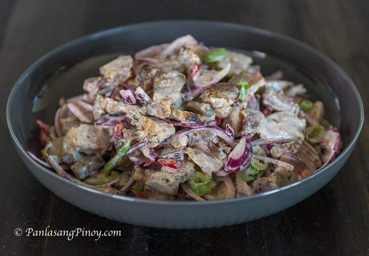
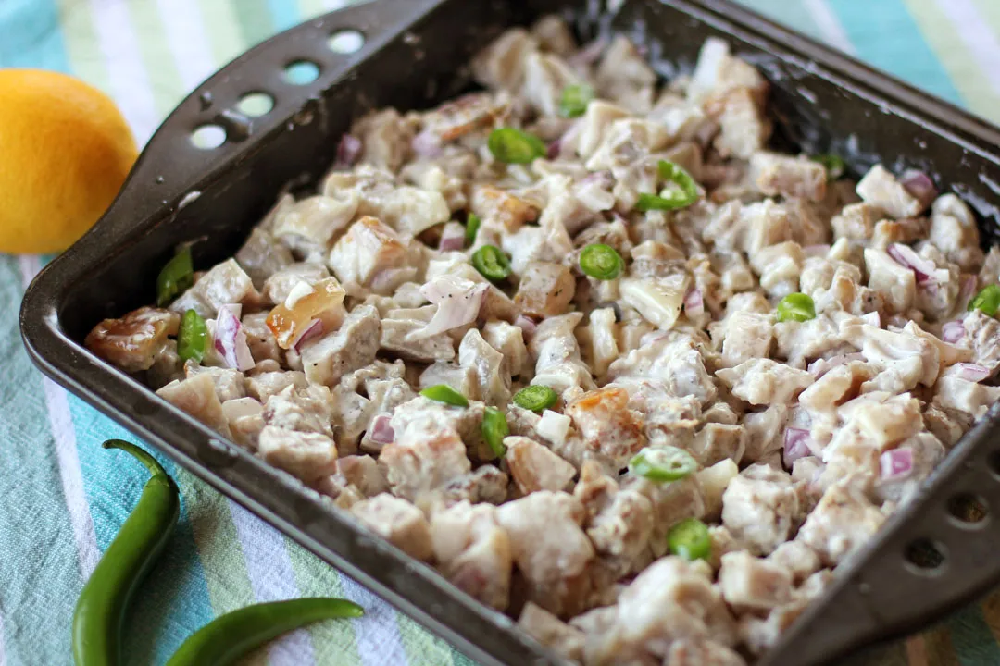
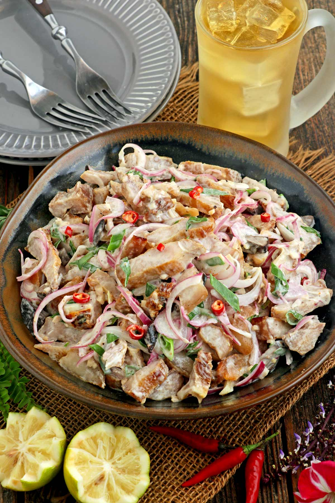
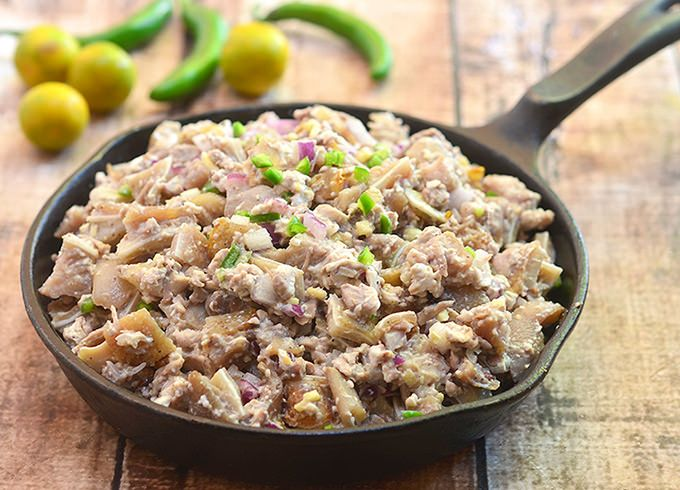

Ngayon ay gagawa tayo ng Pork Dinakdakan gamit ang pork belly. Ito ay isang paglihis mula sa tunay na recipe kung saan ang maskara ng baboy, atay, at mga laman-loob ay karaniwang ginagamit. Ang ulam na ito ay may parehong masarap na lasa at dapat itong mas madaling ihanda.

Hayaan mong sabihin ko sa iyo na ang pagkaing ito ay simple at mabilis na gawin. Ang mga unang beses na nagluluto ay dapat na madaling gawin ito. Ang mahalagang tandaan ay ihanda ang lahat ng sangkap bago simulan ang pagluluto. Nangangahulugan ito ng paghiwa ng karne at pagpuputol ng lahat ng mga gulay muna. Makakatipid ito ng oras.
Ang unang dapat gawin ay pakuluan ang pork belly hanggang lumambot. Dahan-dahang ihulog ang mga hiwa ng tiyan sa isang palayok na may tubig at pakuluan ng 30 hanggang 35 minuto.
Pag-ihaw ang susunod na gagawin. I-ihaw lang ang bawat gilid nang humigit-kumulang 6 na minuto sa kabuuan. Ayan yun! Ngayon ang liempo ay maaaring hiwain sa manipis na piraso at ihagis kasama ng iba pang mga sangkap.
Ang pagbibihis ay isang bagay na dapat kong bigyang-diin. Mayonnaise kasama ang Knorr liquid seasoning at kalamansi ang ginamit. Inirerekomenda ko ang kumbinasyong ito dahil ang mga lasa ng mga sangkap ay gumawa ng pagkakaiba sa huling kinalabasan ng ulam. Ito ay masarap at masarap. Tandaan na ang mga ito ay mga alternatibong sangkap lamang. Pinalitan ng mayo ang utak ng baboy habang ang liquid seasoning ay para sa toyo. Ang kalamansi o katas ng kalamansi ay bahagi ng orihinal na recipe. Maaari ding gumamit ng suka.
Subukan itong Pork Dinakdakan Recipe. Ipaalam sa akin kung ano ang iniisip mo.
Serving: 4g | Calories: 1365kcal | Carbohydrates: 3g | Protein: 22g | Fat: 138g | Saturated Fat: 45g | Cholesterol: 163mg | Sodium: 1005mg | Potassium: 448mg | Vitamin A: 50IU | Vitamin C: 6.8mg | Calcium: 25mg | Iron: 1.5mg